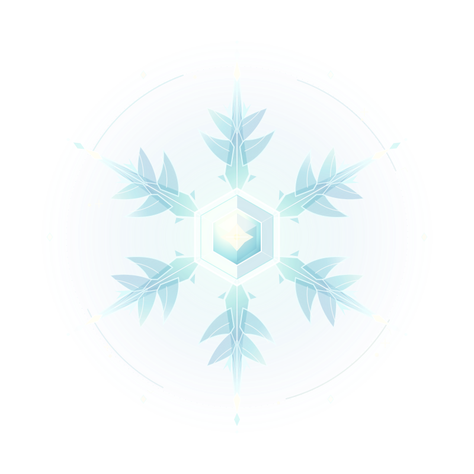

ICE / GAMEPLAY ENGINEER · UNREAL ENGINE / C++
凝固一瞬光，构建一个世界。
让规则凝成世界。
From systems to playable worlds.
专注于 Unreal Engine 客户端与 Gameplay Systems。
比起罗列技术名词，更愿意展示系统背后的设计、实现与验证。
一点点把想法写成规则，再让规则变得可玩。

ICE / 2026SELECTED WORKS ↓
✳ SELECTED WORKS / 01—02
作品选集。
选择一个项目，进入独立的作品页面。
了解玩法目标、个人职责与技术实现。
01 / SYSTEMS ENGINEERINGUNREAL ENGINE 5.8
RTS.Gameplay Systems
MAP / BUILDING / ABILITY / RESOURCE
RTS Gameplay Systems地图、建筑、能力与资源 · 实机画面待补
查看案例 ↗02 / GAMEPLAY EXPERIMENTUNREAL ENGINE 5.7 / LYRA
BA.Blitz Archive
LYRA / GAS / GAMEPLAY RULES
Blitz ArchiveLyra 规则与能力扩展 · 实机画面待补
查看案例 ↗每个项目都有独立的案例页，可以直接切换下一部。从第一部作品开始 →
ABOUT / THIS PORTFOLIO
这里记录我参与的游戏项目与实现过程。比起空泛的技术名词，我更希望把具体负责的系统、设计选择和实际验证讲清楚。暂未提供的 UE 项目画面与测试证据会明确标识，不用 CG 装饰冒充实机成果。